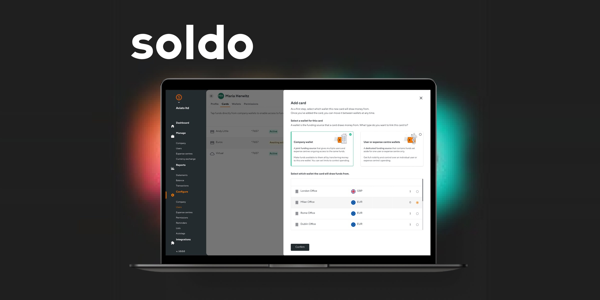
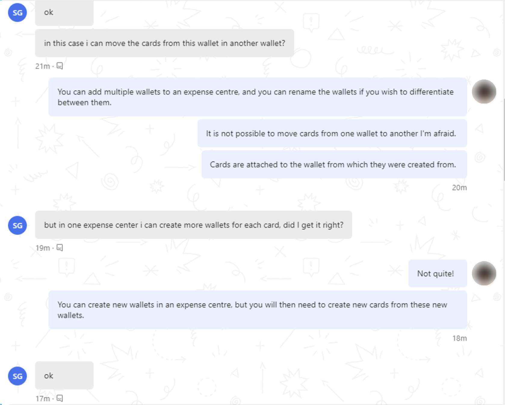
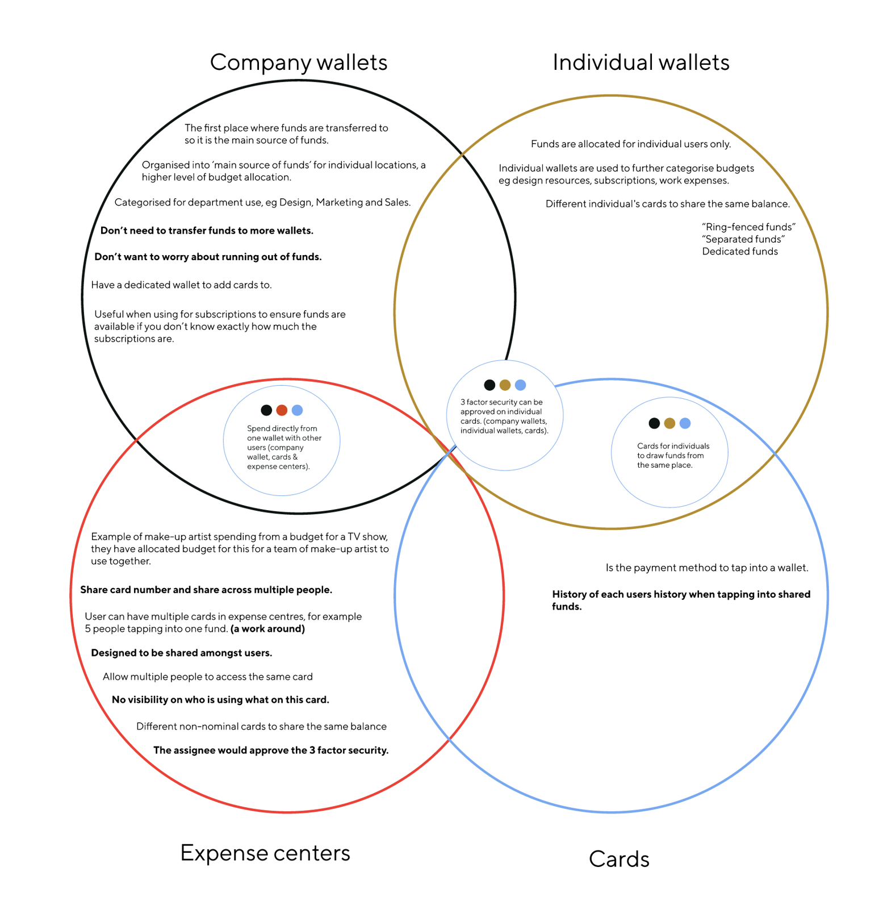

A streamlined funding structure

The problem
Users struggle to manage company funds using the current account structure, which leads to unused funds and usability issues.
How might we provide users with a means of managing budgets while spending autonomously?
My responsibilities
Led research and journey mapping for onboarding and fund allocation, designing the end-to-end user experience including interactions and unhappy paths.
The challenge
Design a funding structure to operate alongside the existing system.
Implement a mechanism that enables cards to draw funds directly from the main company account, while preserving the current setup that allocates funds to individual users.
Research
In collaboration with our research team, we conducted customer interviews to better understand pain points with the current funds structure. We also gathered insights from the customer interaction team, focusing on frequent enquiries and requests related to fund setup and access.

Centralised funding preferred by small companies
They favour a single wallet for all cards to reduce administrative overhead and prevent funds from being fragmented or hidden across multiple cards and wallets.
Unpredictable subscription costs
These make it difficult to allocate funds accurately, resulting in frequent and manual fund transfers.
Manual fund top-ups
Employees are required to contact their account handler to request additional funds, causing delays and friction.
Limited flexibility
Users expressed a need for the ability to transfer cards between user accounts without restrictions.
Site audit
I conducted a site audit and organised the findings into a prioritisation matrix. This helped identify the most impactful yet least disruptive journeys to address first. Based on this analysis, we prioritised two key journeys, both centred around how users interact with wallets.
Definition of wallets, cards and expense centres

User flows
Add card
I designed the order new card journey that would source from the company wallet. I included the option to set spending budgets on the card, but then found out this was not possible as the card would need to be ordered first. Due to time constraints, I worked with the existing card order module instead of building a brand new experience (lines in red indicate the existing module), so the wallet would need to be selected before the card selection and ordering.
I added the option to set spending limits during the card creation flow to remind users that, without restrictions, employees could freely access company funds. However, due to the way card orders are processed, spending limits could not be applied at this stage. Instead, a pop-up at the end of the journey directs users to the appropriate section of the platform to configure these settings.
User testing
Test plan
To identify if the concept and designs met user needs, we conducted user testing based on these tasks:
Change the source of funds for a card so it taps funds from the Company Wallet.
Order a new card that also taps funds from the Company Wallet.
Testing insights
We tested with a number of customers with varying levels of experience with the service. I analysed the test results and used these findings to iterate on the design.
What worked well
- ✓The user flow to change the source of funds and add a card linked to the company wallet.
- ✓The location of changing the source of funds within the platform.
What did not work well
- !Interpreting the relationship between user wallets and cards linked to the company wallet.
- !Lack of information around the funds structure and changing the source of funds.
Final design
Focus on fund types
Explaining fund types, and how wallets and cards work, was important to inform users how accessing funds works. This had not been explained before, so I took the opportunity to focus on defining the fund types, creating a step-by-step guide and writing copy to communicate this information.
Company wallet
The description of ‘joint funding’ and ‘multiple users’ immediately describes the shared funds structure. It was important to mention spend limits at this stage, because employees mismanaging company funds was a concern raised during testing.
User or expense centre wallets
The title ‘user wallets’ is intended to explain that the funds are allocated for the user only, while ‘expense centres’ allocate funds to a group of users.
Configure
Cards now have a dedicated section to align with the layout changes in the space where cards and wallets are viewed. The same actions of moving a card and ordering new cards are also available here, because this need often came up during user testing. To better distinguish the wallet types, I used badges and iconography.
Change wallet
Add card
Let’s work together
Have a project in mind? I’d love to connect.
christineanhhoang@gmail.com